Проектирование систем ЭОМ в Revit

В современном проектировании работа в Revit для раздела ЭОМ – это не перенос двумерных чертежей в трехмерное пространство, а создание согласованной цифровой модели, где каждый элемент обладает свойствами и логическими связями. Такой подход позволяет минимизировать ошибки, автоматизировать формирование документации и решать задачи междисциплинарной координации на ранних этапах. Рассмотрим последовательно основные аспекты работы.
Настройка шаблонов вида
Первым шагом необходимо настроить шаблоны вида. Этот этап важен во всех разделах проектирования.
Выбираем нужный нам вид, например, создаем план этажа. Если у Вас есть уже подготовленные шаблоны, которые Вы используете из проекта в проект, то загрузите их и используйте.
Если настроенного шаблона нет, то зайдите в шаблон вида.
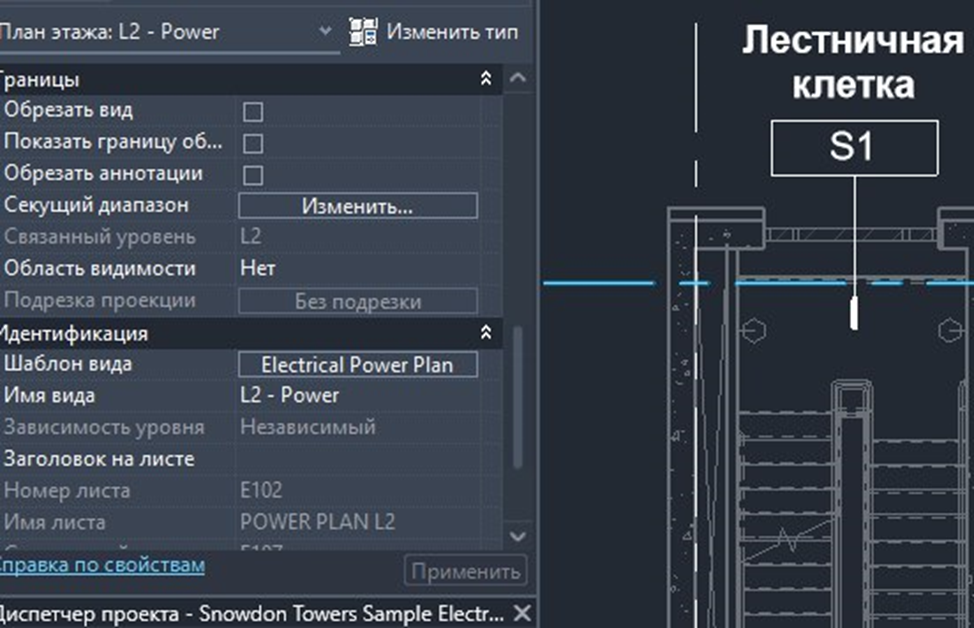
Если в списке есть подходящий вам, то выберите его.
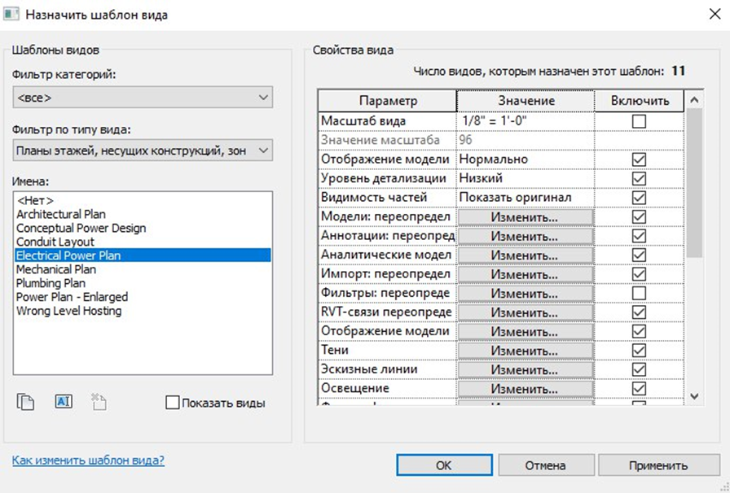
Если вы хотите настроить или изменить текущий шаблон, то настройте условия видимости тех элементов, которые вам нужны на данном виде. Для удобства поиска выберите необходимые вам фильтры по дисциплинам, в нашем случае, например, нам необходимо электрооборудование.
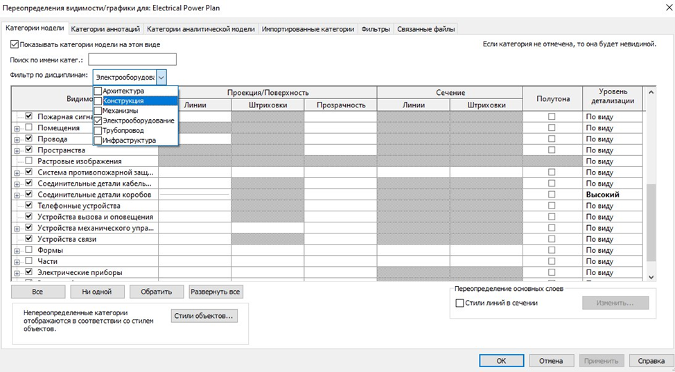
И выбираем те элементы, которые нам нужны для отображения на виде. Затем нажимаем «применить» и «ОК».
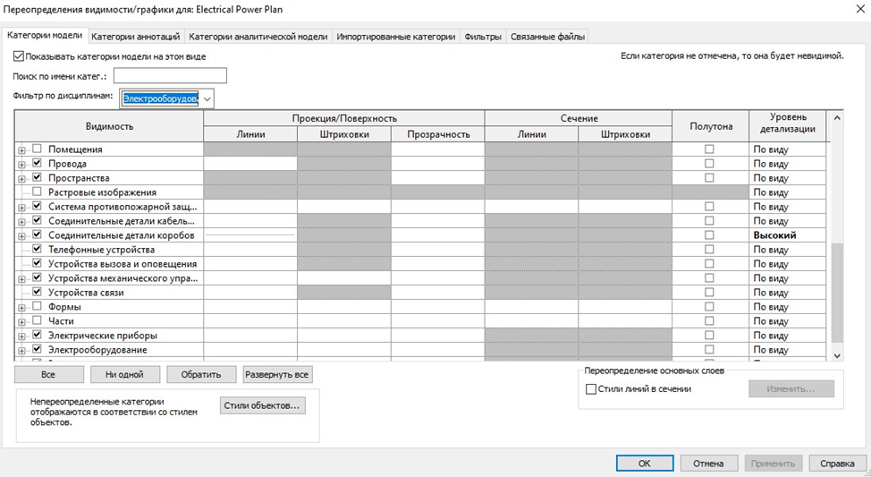
После каждого важного изменения не забывайте сохранять модель во избежание потери всех изменений. В случае, если Вы работаете на Revit-сервере, то синхронизируйте модель для того, чтобы смежные разделы могли видеть Ваши изменения, внесенные в модель. Кнопки расположены на верхней панели.
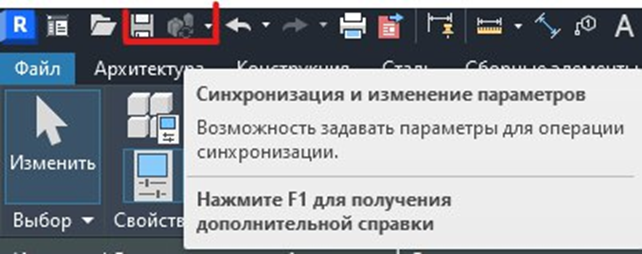
Изменение единиц измерения
Настройкой модели перед работой инженеров занимаются BIM-специалисты, но на практике часто встречается такое, что единицы измерения в проекте не настроены или сбиваются и каждый раз просить помощи у BIM-менеджера не представляется возможным, так как это тормозит работу. Давайте подробнее рассмотрим, как можно самостоятельно изменить единицы проекта.
Для этого необходимо перейти на вкладку «Управление» → «Единицы проекта».
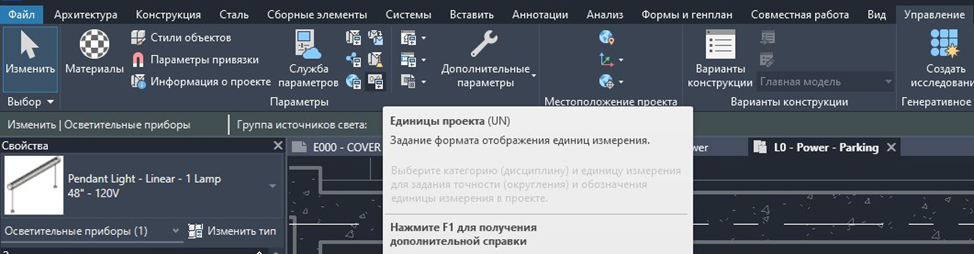
Нажать справа от необходимой единицы измерения формат.
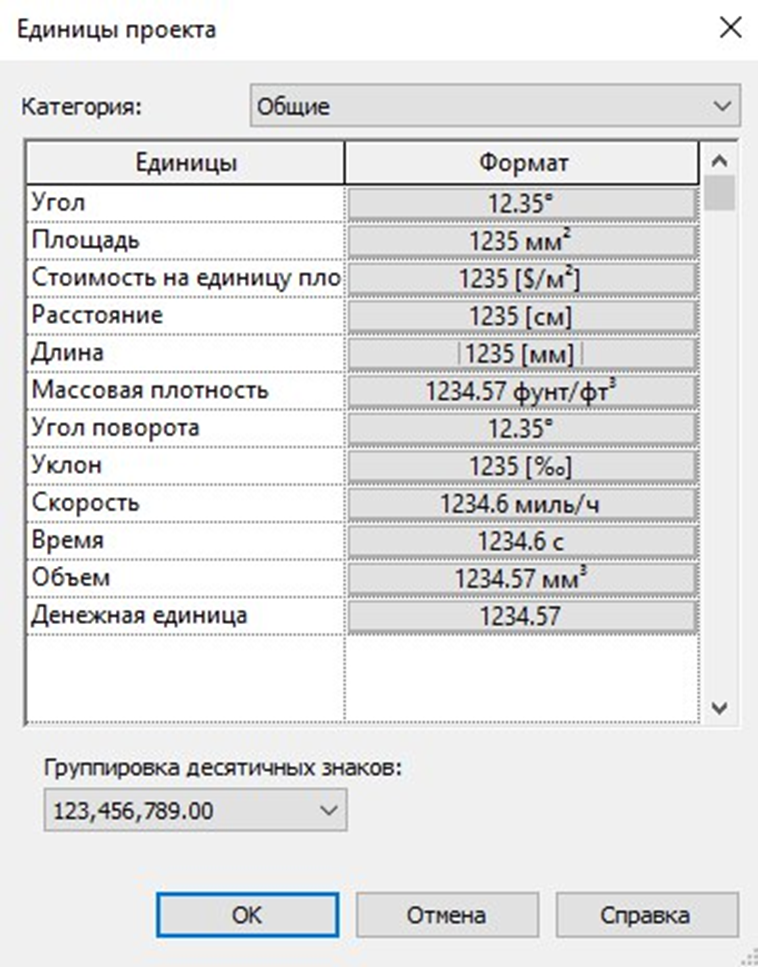
И затем выбрать, в каких единицах необходимо отображать параметры.
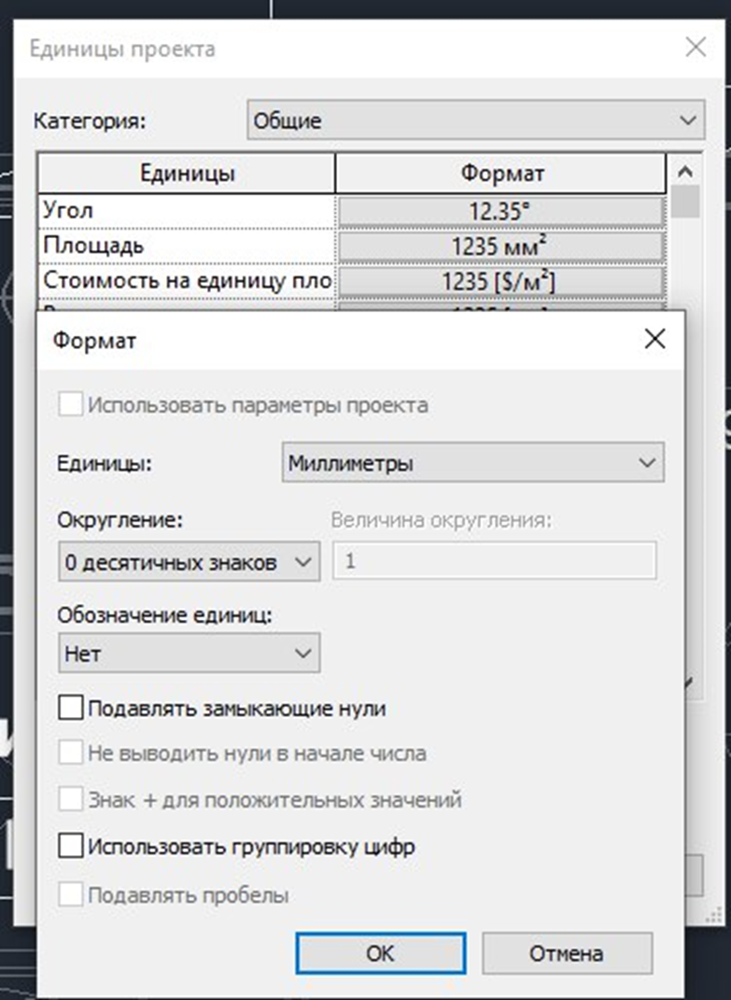
Можно выбрать число знаков для округления и необходимо ли обозначать единицы, например, 12 мм.
Мы выбрали отображение в миллиметрах – на картинке показаны измененные отметки.
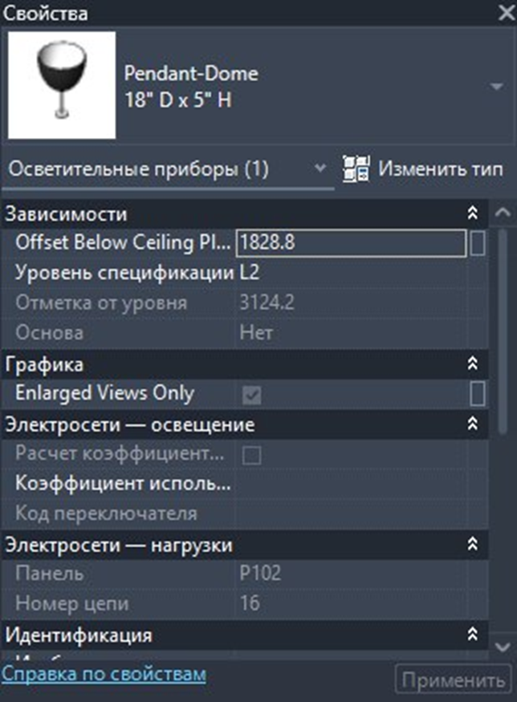
Выбор отображения в миллиметрах изменяет отображение единиц на чертежах.
Размещение и настройка оборудования
Первым шагом является загрузка или создание корректных семейств. Рекомендуется использовать параметрические семейства, которые содержат не только геометрию, но и атрибутивную информацию, необходимую для спецификации. Важными параметрами, проверенными на практике, являются: типоразмер (например, ЩР-1-24М), степень защиты оболочки (IP), количество модулей, габаритные размеры и материал корпуса. Наличие этих данных, присвоенных через единый стандарт параметров (например, ADSK_Марка), является основой для последующей автоматизации проектирования.
После настройки семейств следует перейти к их размещению на планах. Здесь необходимо руководствоваться не только удобством, но и нормативными требованиями. В модели это означает необходимость проверки зон открывания дверей и обеспечения технологических проходов. Крайне важно выполнять размещение с активной привязкой к архитектурной подоснове, что позволяет сразу выявлять конфликты с дверными проемами или элементами конструкций.
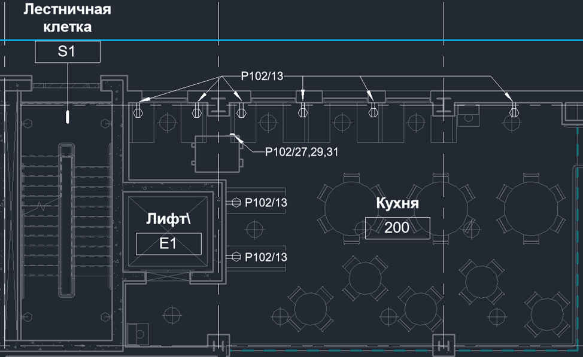
Разработка светотехнической части проекта
Следующим важным этапом является проектирование осветительных сетей, которое в Revit выходит за рамки простой расстановки условных обозначений.
На начальной стадии необходимо подобрать и настроить семейства светильников. Процесс расстановки светильников должен быть системным на основании расчетов количества светильников и недопущении «пятен» недосвета.
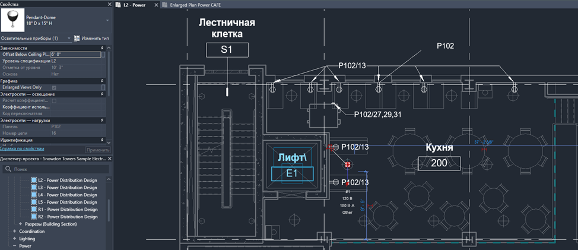
После расстановки следует перейти к проверке решений. Revit позволяет создавать специализированные виды, например, «План освещения», где отображаются только светильники и выключатели. Итоговое размещение должно обеспечивать нормируемую освещённость в соответствии со СП 52.13330.2016.
Трассировка кабельных лотков
Трассировка трасс лотков является основной и одной из самых сложных частей моделирования систем ЭОМ. Сложность связана с наличием других систем, которые также имеют большие габариты. Логическим продолжением работы является соединение созданных ранее щитов и светильников электрическими цепями.
Перед началом трассировки требуется загрузить типы используемых лотков и коробов. Для каждого типа в настройках системы задаются ключевые свойства. Эти данные, будучи присвоенными элементам системы, будут автоматически переноситься в спецификацию. Рекомендуется разделять типы систем.
Кабельный лоток прокладывается с помощью электрических инструментов на вкладке «Системы». Если ваши семейства имеют свойства электрических систем, то вы сможете воспользоваться ими с этой вкладки.
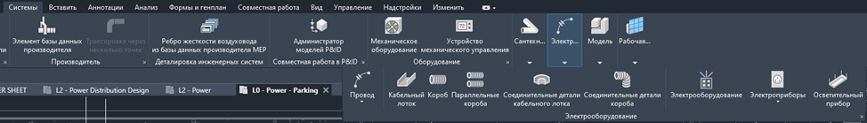
Лотки прокладываются как трубопроводы. Сначала выбираем в меню «кабельный лоток» и ведем трассу по заданной траектории.
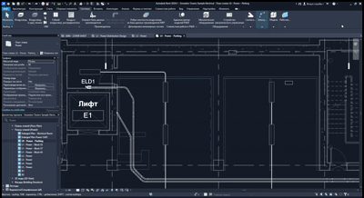
Кабельный короб прокладывается аналогично. Выбираем необходимый тип короба и прокладываем трассу на нужном нам виде.
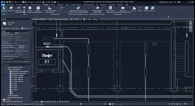
Трассировка может выполняться как автоматически, так и вручную. Инструмент «Создать цепь» позволяет связать выбранные потребители с соответствующим щитом, после чего Revit предлагает несколько вариантов трассы. Автоматически предложенный путь часто является кратчайшим, но не всегда оптимальным с точки зрения монтажа или отсутствия коллизий.
Поэтому после автоматического построения обязательно требуется анализ трассы в трёхмерном виде. Трассы не должны пересекать вентиляционные камеры, воздуховоды и трубопроводы, особенно горячего водоснабжения, что согласуется с требованиями СП 256.1325800.2016. Трассы также должны корректно указывать способ прокладки: в лотке, трубе или по конструкциям.
Важнейшим результатом корректной трассировки является автоматическое вычисление длин кабелей. Программа суммирует длину всех сегментов трассы с учётом подъемов и спусков. Однако, как отмечалось в предыдущих уроках, для составления корректной спецификации к этой длине необходимо добавить технологический запас (10-15% для кабелей). Это достигается не в модели, а путем настройки формул в спецификации (например, значение длины умножается на коэффициент 1.15). Таким образом, трассировка в Revit обеспечивает переход от графической модели к количественным данным, готовым для заказа материалов.
Важное для работы: для того, чтобы полностью выделить сеть, нажмите «CapsLock» и затем левую клавишу.
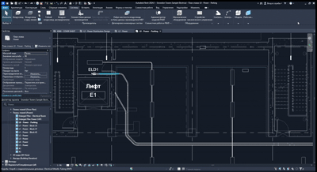
Формирование рабочей документации на основе модели
Созданная и проверенная модель служит источником для автоматического формирования комплекта документов рабочей документации (РД).
Первым делом оформляются чертежи. На основе модели создаются основные виды: планы расположения оборудования, планы сетей освещения, силовых сетей. С помощью настроек видимости/графики на каждом плане отображаются только необходимые категории элементов. Это позволяет получить чистые и информативные чертежи, соответствующие требованиям ГОСТ Р 21.101-2020.
Завершающим шагом перед выпуском проекта является комплексная проверка. Инструмент «Проверка на пересечения» позволяет автоматически выявить пересечения смоделированных электрических трасс с элементами других подгруженных разделов. Устранение таких коллизий на этапе проектирования, а не на стройплощадке, является одним из ключевых экономических преимуществ BIM-подхода. После этого модель и документация готовы к согласованию.
Практическая часть
Теперь закрепим материал урока в тестовых заданиях.